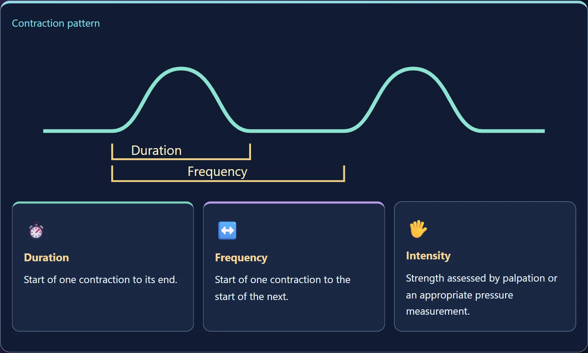
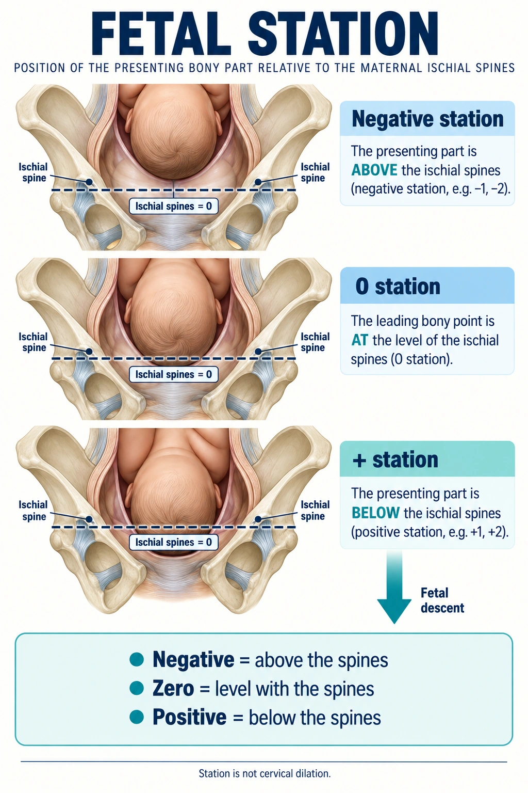

One picture for how a contraction is measured, one for where the baby is, and the four stages in the order you will be asked about them.
🏁 Also on this topic: The Stages of Labor (NG-324) — what happens in each stage and the nursing priority that changes at every transition. This page is the 5 Ps, true vs false labor, contractions and station.
Cervical change is what makes labor real. Not how much it hurts, not how often the contractions come — dilation and effacement. Everything else on this page is a way of describing or supporting that change.
The fetus — its size, lie, presentation, attitude and position. A well-flexed vertex presentation passes most easily.
The bony pelvis and soft tissues. A gynecoid pelvis is the most favorable shape.
The contractions (involuntary, primary power) plus maternal pushing in the second stage (voluntary, secondary power).
The mother’s position. Upright and side-lying use gravity and open the pelvis; flat on the back does neither.
Fear and exhaustion raise catecholamines, which slow labor. Support, information and rest are clinical interventions, not niceties.
Three numbers get charted, and they are measured from different points. This is the picture worth memorizing.

🖼️ Open readable diagram & course labelsSources checked October 3, 2026:
| Number | Measured from | Units |
|---|---|---|
| Frequency | Start of one contraction to the start of the next | minutes |
| Duration | Start to end of the same contraction | seconds |
| Intensity | Strength at the peak — palpation, or mmHg with an internal catheter | mild / mod / strong |
| Resting tone | The uterus between contractions | soft |
A contraction lasting longer than 90 seconds, contractions closer than 2 minutes, or a uterus that does not relax between them is tachysystole. Blood reaches the placenta only during the rest period — no rest, no oxygen.
Do first: stop the oxytocin, turn her to her side, give oxygen and a fluid bolus, and call the provider.
| TRUE labor | FALSE labor (Braxton Hicks) | |
|---|---|---|
| Contractions | Regular, and they get closer, longer and stronger | Irregular; they do not build |
| Felt where | Back, radiating around to the abdomen | Abdomen and groin only |
| Walking | Makes them stronger | Often makes them stop |
| Cervix | Dilates and effaces | No change |
| Show | Bloody show is common | Usually none |
The cervix is the tiebreaker. Everything above it can be argued; cervical change cannot.
Rest, hydrate, change position, reassess. Dehydration alone can set off irritable contractions, so a glass of water and a walk are real interventions.
Teach her when to come in: contractions 5 minutes apart, lasting 1 minute, for 1 hour — and immediately for ruptured membranes, bleeding, or reduced fetal movement.
Station is the presenting part measured against the ischial spines. Minus is above them, plus is below, and 0 means engaged — that is how the exams key it. Strictly the two are defined separately: station is where the presenting part sits against the spines, and engagement is the widest diameter having passed the pelvic inlet, which usually lands at about station 0.

Sources checked October 3, 2026:
Why it matters: a presenting part that is still high (−3 or above) when the membranes rupture is the setup for cord prolapse.
The long one. It ends at 10 cm, not at the urge to push.
| Phase | Dilation | Contractions | What she is like |
|---|---|---|---|
| Latent | 0–5 cm | Mild, every 5–10 min | Talkative, excited, can walk |
| Active | 6–10 cm | Moderate to strong, every 2–5 min | Inward, focused, wants help |
| Transition | 8–10 cm | Strong, every 2–3 min | Irritable, nauseated, shaky, “I can’t do this” |
Transition is the shortest phase and the one she remembers. Saying “this is transition, it means you are nearly there” is genuinely useful nursing.
Pushing. Contractions every 2–3 min, lasting 60–90 s.
Watch: the fetal heart rate with pushing, the perineum, and her energy. Support: upright or side-lying positions, and let her push with the urge rather than to a count.
Usually 5–30 minutes. Three signs the placenta has separated:
Never pull on the cord to hurry it. That is how you get a uterine inversion.
Recovery, and the highest-risk window for hemorrhage.
Assess every 15 minutes for the first hour: fundus (firm, midline, at or below the umbilicus), lochia, blood pressure and pulse, and the bladder.